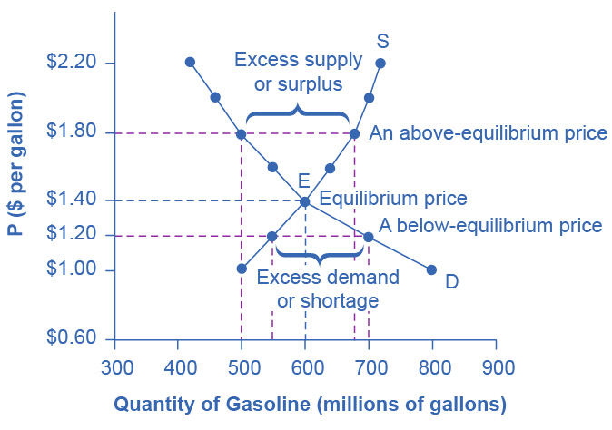
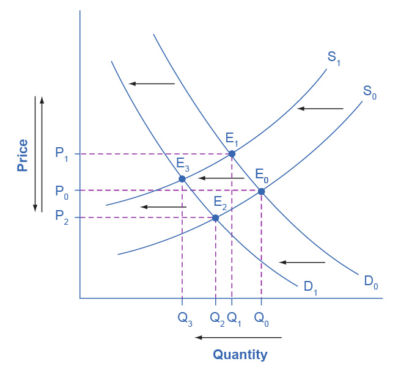
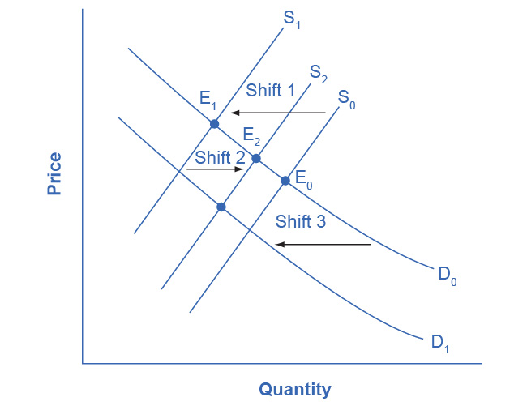
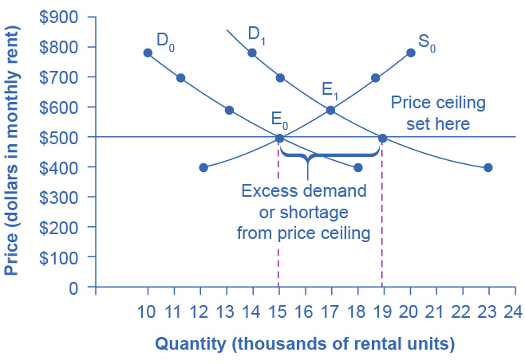
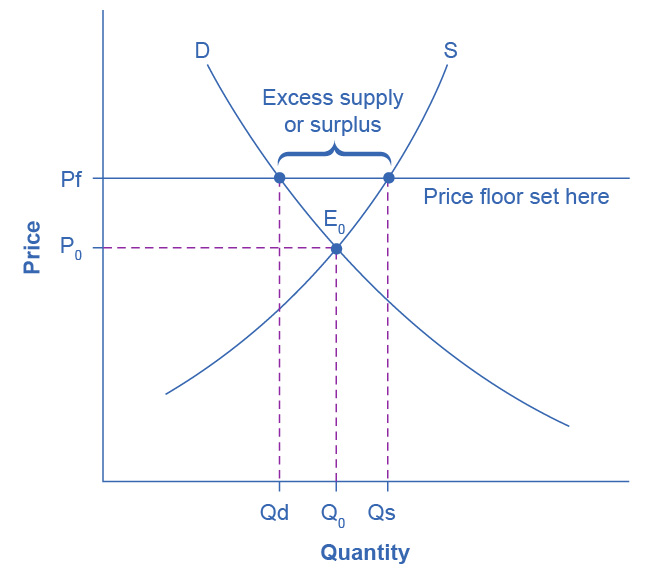

Chapter 3 - Demand and Supply

Figure 3.1 Farmer’s Market Organic vegetables and fruits that are grown and sold within a specific geographical region should, in theory, cost less than conventional produce because the transportation costs are less. That is not, however, usually the case. (Credit: modification of “Old Farmers’ Market” by NatalieMaynor/Flickr, CC BY 2.0)
Chapter Objectives
In this chapter, you will learn about:
- Demand, Supply, and Equilibrium in Markets for Goods and Services
- Shifts in Demand and Supply for Goods and Services
- Changes in Equilibrium Price and Quantity: The Four-Step Process
- Price Ceilings and Price Floors
Introduction to Demand and Supply
Bring It Home
Why Can We Not Get Enough of Organic Foods?
Organic food is increasingly popular, not just in the United States, but worldwide. At one time, consumers had to go to specialty stores or farmers’ markets to find organic produce. Now it is available in most grocery stores. In short, organic has become part of the mainstream.
Ever wonder why organic food costs more than conventional food? Why, say, does an organic Fuji apple cost $2.75 a pound, while its conventional counterpart costs $1.72 a pound? The same price relationship is true for just about every organic product on the market. If many organic foods are locally grown, would they not take less time to get to market and therefore be cheaper? What are the forces that keep those prices from coming down? Turns out those forces have quite a bit to do with this chapter’s topic: demand and supply.
An auction bidder pays thousands of dollars for a dress Whitney Houston wore. A collector spends a small fortune for a few drawings by John Lennon. People usually react to purchases like these in two ways: their jaw drops because they think these are high prices to pay for such goods or they think these are rare, desirable items and the amount paid seems right.
Link It Up
Visit this website to read a list of bizarre items that have been purchased for their ties to celebrities. These examples represent an interesting facet of demand and supply.
When economists talk about prices, they are less interested in making judgments than in gaining a practical understanding of what determines prices and why prices change. Consider a price most of us contend with weekly: that of a gallon of gas. Why was the average price of gasoline in the United States $3.16 per gallon in June of 2020? Why did the price for gasoline fall sharply to $2.42 per gallon by January of 2021? To explain these price movements, economists focus on the determinants of what gasoline buyers are willing to pay and what gasoline sellers are willing to accept.
As it turns out, the price of gasoline in June of any given year is nearly always higher than the price in January of that same year. Over recent decades, gasoline prices in midsummer have averaged about 10 cents per gallon more than their midwinter low. The likely reason is that people drive more in the summer, and are also willing to pay more for gas, but that does not explain how steeply gas prices fell. Other factors were at work during those 18 months, such as increases in supply and decreases in the demand for crude oil.
This chapter introduces the economic model of demand and supply—one of the most powerful models in all of economics. The discussion here begins by examining how demand and supply determine the price and the quantity sold in markets for goods and services, and how changes in demand and supply lead to changes in prices and quantities.
3.1 Demand, Supply, and Equilibrium in Markets for Goods and Services
Learning Objectives
By the end of this section, you will be able to:
- Explain demand, quantity demanded, and the law of demand
- Explain supply, quantity supplied, and the law of supply
- Identify a demand curve and a supply curve
- Explain equilibrium, equilibrium price, and equilibrium quantity
First let’s first focus on what economists mean by demand, what they mean by supply, and then how demand and supply interact in a market.
Demand for Goods and Services
Economists use the term demand to refer to the amount of some good or service consumers are willing and able to purchase at each price. Demand is fundamentally based on needs and wants—if you have no need or want for something, you won’t buy it. While a consumer may be able to differentiate between a need and a want, from an economist’s perspective they are the same thing. Demand is also based on ability to pay. If you cannot pay for it, you have no effective demand. By this definition, a person who does not have a drivers license has no effective demand for a car.
What a buyer pays for a unit of the specific good or service is called price. The total number of units that consumers would purchase at that price is called the quantity demanded. A rise in price of a good or service almost always decreases the quantity demanded of that good or service. Conversely, a fall in price will increase the quantity demanded. When the price of a gallon of gasoline increases, for example, people look for ways to reduce their consumption by combining several errands, commuting by carpool or mass transit, or taking weekend or vacation trips closer to home. Economists call this inverse relationship between price and quantity demanded the law of demand. The law of demand assumes that all other variables that affect demand (which we explain in the next module) are held constant.
We can show an example from the market for gasoline in a table or a graph. Economist call a table that shows the quantity demanded at each price, such as Table 3.1, a demand schedule. In this case we measure price in dollars per gallon of gasoline. We measure the quantity demanded in millions of gallons over some time period (for example, per day or per year) and over some geographic area (like a state or a country). A demand curve shows the relationship between price and quantity demanded on a graph like Figure 3.2, with quantity on the horizontal axis and the price per gallon on the vertical axis. (Note that this is an exception to the normal rule in mathematics that the independent variable (x) goes on the horizontal axis and the dependent variable (y) goes on the vertical axis. Economics is not math.)
Table 3.1 shows the demand schedule and the graph in Figure 3.2 shows the demand curve. These are two ways to describe the same relationship between price and quantity demanded.
| Price (per gallon) | Quantity Demanded (millions of gallons) |
|---|---|
| $1.00 | 800 |
| $1.20 | 700 |
| $1.40 | 600 |
| $1.60 | 550 |
| $1.80 | 500 |
| $2.00 | 460 |
| $2.20 | 420 |

Figure 3.2 A Demand Curve for Gasoline The demand schedule shows that as price rises, quantity demanded decreases, and vice versa. We graph these points, and the line connecting them is the demand curve (D). The downward slope of the demand curve again illustrates the law of demand—the inverse relationship between prices and quantity demanded.
Demand curves will appear somewhat different for each product. They may appear relatively steep or flat, or they may be straight or curved. Nearly all demand curves share the fundamental similarity that they slope down from left to right. Demand curves embody the law of demand: As the price increases, the quantity demanded decreases, and conversely, as the price decreases, the quantity demanded increases.
Confused about these different types of demand? Read the next Clear It Up feature.
Clear It Up
Is demand the same as quantity demanded?
In economic terminology, demand is not the same as quantity demanded. When economists talk about demand, they mean the relationship between a range of prices and the quantities demanded at those prices, as illustrated by a demand curve or a demand schedule. When economists talk about quantity demanded, they mean only a certain point on the demand curve, or one quantity on the demand schedule. In short, demand refers to the curve and quantity demanded refers to a (specific) point on the curve.
Supply of Goods and Services
When economists talk about supply, they mean the amount of some good or service a producer is willing to supply at each price. Price is what the producer receives for selling one unit of a good or service. A rise in price almost always leads to an increase in the quantity supplied of that good or service, while a fall in price will decrease the quantity supplied. When the price of gasoline rises, for example, it encourages profit-seeking firms to take several actions: expand exploration for oil reserves; drill for more oil; invest in more pipelines and oil tankers to bring the oil to plants for refining into gasoline; build new oil refineries; purchase additional pipelines and trucks to ship the gasoline to gas stations; and open more gas stations or keep existing gas stations open longer hours. Economists call this positive relationship between price and quantity supplied—that a higher price leads to a higher quantity supplied and a lower price leads to a lower quantity supplied—the law of supply. The law of supply assumes that all other variables that affect supply (to be explained in the next module) are held constant.
Still unsure about the different types of supply? See the following Clear It Up feature.
Clear It Up
Is supply the same as quantity supplied?
In economic terminology, supply is not the same as quantity supplied. When economists refer to supply, they mean the relationship between a range of prices and the quantities supplied at those prices, a relationship that we can illustrate with a supply curve or a supply schedule. When economists refer to quantity supplied, they mean only a certain point on the supply curve, or one quantity on the supply schedule. In short, supply refers to the curve and quantity supplied refers to a (specific) point on the curve.
Figure 3.3 illustrates the law of supply, again using the market for gasoline as an example. Like demand, we can illustrate supply using a table or a graph. A supply schedule is a table, like Table 3.2, that shows the quantity supplied at a range of different prices. Again, we measure price in dollars per gallon of gasoline and we measure quantity supplied in millions of gallons. A supply curve is a graphic illustration of the relationship between price, shown on the vertical axis, and quantity, shown on the horizontal axis. The supply schedule and the supply curve are just two different ways of showing the same information. Notice that the horizontal and vertical axes on the graph for the supply curve are the same as for the demand curve.

Figure 3.3 A Supply Curve for Gasoline The supply schedule is the table that shows quantity supplied of gasoline at each price. As price rises, quantity supplied also increases, and vice versa. The supply curve (S) is created by graphing the points from the supply schedule and then connecting them. The upward slope of the supply curve illustrates the law of supply—that a higher price leads to a higher quantity supplied, and vice versa.
| Price (per gallon) | Quantity Supplied (millions of gallons) |
|---|---|
| $1.00 | 500 |
| $1.20 | 550 |
| $1.40 | 600 |
| $1.60 | 640 |
| $1.80 | 680 |
| $2.00 | 700 |
| $2.20 | 720 |
The shape of supply curves will vary somewhat according to the product: steeper, flatter, straighter, or curved. Nearly all supply curves, however, share a basic similarity: they slope up from left to right and illustrate the law of supply: as the price rises, say, from $1.00 per gallon to $2.20 per gallon, the quantity supplied increases from 500 gallons to 720 gallons. Conversely, as the price falls, the quantity supplied decreases.
Equilibrium—Where Demand and Supply Intersect
Because the graphs for demand and supply curves both have price on the vertical axis and quantity on the horizontal axis, the demand curve and supply curve for a particular good or service can appear on the same graph. Together, demand and supply determine the price and the quantity that will be bought and sold in a market.
Figure 3.4 illustrates the interaction of demand and supply in the market for gasoline. The demand curve (D) is identical to Figure 3.2. The supply curve (S) is identical to Figure 3.3. Table 3.3 contains the same information in tabular form.

Figure 3.4 Demand and Supply for Gasoline The demand curve (D) and the supply curve (S) intersect at the equilibrium point E, with a price of $1.40 and a quantity of 600. The equilibrium price is the only price where quantity demanded is equal to quantity supplied. At a price above equilibrium like $1.80, quantity supplied exceeds the quantity demanded, so there is excess supply. At a price below equilibrium such as $1.20, quantity demanded exceeds quantity supplied, so there is excess demand.
| Price (per gallon) | Quantity demanded (millions of gallons) | Quantity supplied (millions of gallons) |
|---|---|---|
| $1.00 | 800 | 500 |
| $1.20 | 700 | 550 |
| $1.40 | 600 | 600 |
| $1.60 | 550 | 640 |
| $1.80 | 500 | 680 |
| $2.00 | 460 | 700 |
| $2.20 | 420 | 720 |
Remember this: When two lines on a diagram cross, this intersection usually means something. The point where the supply curve (S) and the demand curve (D) cross, designated by point E in Figure 3.4, is called the equilibrium. The equilibrium price is the only price where the plans of consumers and the plans of producers agree—that is, where the amount of the product consumers want to buy (quantity demanded) is equal to the amount producers want to sell (quantity supplied). Economists call this common quantity the equilibrium quantity. At any other price, the quantity demanded does not equal the quantity supplied, so the market is not in equilibrium at that price.
In Figure 3.4, the equilibrium price is $1.40 per gallon of gasoline and the equilibrium quantity is 600 million gallons. If you had only the demand and supply schedules, and not the graph, you could find the equilibrium by looking for the price level on the tables where the quantity demanded and the quantity supplied are equal.
The word “equilibrium” means “balance.” If a market is at its equilibrium price and quantity, then it has no reason to move away from that point. However, if a market is not at equilibrium, then economic pressures arise to move the market toward the equilibrium price and the equilibrium quantity.
Imagine, for example, that the price of a gallon of gasoline was above the equilibrium price—that is, instead of $1.40 per gallon, the price is $1.80 per gallon. The dashed horizontal line at the price of $1.80 in Figure 3.4 illustrates this above-equilibrium price. At this higher price, the quantity demanded drops from 600 to 500. This decline in quantity reflects how consumers react to the higher price by finding ways to use less gasoline.
Moreover, at this higher price of $1.80, the quantity of gasoline supplied rises from 600 to 680, as the higher price makes it more profitable for gasoline producers to expand their output. Now, consider how quantity demanded and quantity supplied are related at this above-equilibrium price. Quantity demanded has fallen to 500 gallons, while quantity supplied has risen to 680 gallons. In fact, at any above-equilibrium price, the quantity supplied exceeds the quantity demanded. We call this an excess supply or a surplus.
With a surplus, gasoline accumulates at gas stations, in tanker trucks, in pipelines, and at oil refineries. This accumulation puts pressure on gasoline sellers. If a surplus remains unsold, those firms involved in making and selling gasoline are not receiving enough cash to pay their workers and to cover their expenses. In this situation, some producers and sellers will want to cut prices, because it is better to sell at a lower price than not to sell at all. Once some sellers start cutting prices, others will follow to avoid losing sales. These price reductions in turn will stimulate a higher quantity demanded. Therefore, if the price is above the equilibrium level, incentives built into the structure of demand and supply will create pressures for the price to fall toward the equilibrium.
Now suppose that the price is below its equilibrium level at $1.20 per gallon, as the dashed horizontal line at this price in Figure 3.4 shows. At this lower price, the quantity demanded increases from 600 to 700 as drivers take longer trips, spend more minutes warming up the car in the driveway in wintertime, stop sharing rides to work, and buy larger cars that get fewer miles to the gallon. However, the below-equilibrium price reduces gasoline producers’ incentives to produce and sell gasoline, and the quantity supplied falls from 600 to 550.
When the price is below equilibrium, there is excess demand, or a shortage—that is, at the given price the quantity demanded, which has been stimulated by the lower price, now exceeds the quantity supplied, which has been depressed by the lower price. In this situation, eager gasoline buyers mob the gas stations, only to find many stations running short of fuel. Oil companies and gas stations recognize that they have an opportunity to make higher profits by selling what gasoline they have at a higher price. As a result, the price rises toward the equilibrium level. Read Chapter 5 for more discussion on the importance of the demand and supply model.
3.2 Shifts in Demand and Supply for Goods and Services
Learning Objectives
By the end of this section, you will be able to:
- Identify factors that affect demand
- Graph demand curves and demand shifts
- Identify factors that affect supply
- Graph supply curves and supply shifts
The previous module explored how price affects the quantity demanded and the quantity supplied. The result was the demand curve and the supply curve. Price, however, is not the only factor that influences buyers’ and sellers’ decisions. For example, how is demand for vegetarian food affected if, say, health concerns cause more consumers to avoid eating meat? How is the supply of diamonds affected if diamond producers discover several new diamond mines? What are the major factors, in addition to the price, that influence demand or supply?
Link It Up
Visit this website to read a brief note on how marketing strategies can influence supply and demand of products.
What Factors Affect Demand?
We defined demand as the amount of some product a consumer is willing and able to purchase at each price. That suggests at least two factors that affect demand. Willingness to purchase suggests a desire, based on what economists call tastes and preferences. If you neither need nor want something, you will not buy it, and if you really like something, you will buy more of it than someone who does not share your strong preference for it. Ability to purchase suggests that income is important. Professors are usually able to afford better housing and transportation than students, because they have more income. Prices of related goods can affect demand also. If you need a new car, the price of a Honda may affect your demand for a Ford. Finally, the size or composition of the population can affect demand. The more children a family has, the greater their demand for clothing. The more driving-age children a family has, the greater their demand for car insurance, and the less for diapers and baby formula.
These factors matter for both individual and market demand as a whole. Exactly how do these various factors affect demand, and how do we show the effects graphically? To answer those questions, we need the ceteris paribus assumption.
The Ceteris Paribus Assumption
A demand curve or a supply curve is a relationship between two, and only two, variables: quantity on the horizontal axis and price on the vertical axis. The assumption behind a demand curve or a supply curve is that no relevant economic factors, other than the product’s price, are changing. Economists call this assumption ceteris paribus, a Latin phrase meaning “other things being equal.” Any given demand or supply curve is based on the ceteris paribus assumption that all else is held equal. A demand curve or a supply curve is a relationship between two, and only two, variables when all other variables are kept constant. If all else is not held equal, then the laws of supply and demand will not necessarily hold, as the following Clear It Up feature shows.
Clear It Up
When does ceteris paribus apply?
We typically apply ceteris paribus when we observe how changes in price affect demand or supply, but we can apply ceteris paribus more generally. In the real world, demand and supply depend on more factors than just price. For example, a consumer’s demand depends on income and a producer’s supply depends on the cost of producing the product. How can we analyze the effect on demand or supply if multiple factors are changing at the same time—say price rises and income falls? The answer is that we examine the changes one at a time, assuming the other factors are held constant.
For example, we can say that an increase in the price reduces the amount consumers will buy (assuming income, and anything else that affects demand, is unchanged). Additionally, a decrease in income reduces the amount consumers can afford to buy (assuming price, and anything else that affects demand, is unchanged). This is what the ceteris paribus assumption really means. In this particular case, after we analyze each factor separately, we can combine the results. The amount consumers buy falls for two reasons: first because of the higher price and second because of the lower income.
How Does Income Affect Demand?
Let’s use income as an example of how factors other than price affect demand. Figure 3.5 shows the initial demand for automobiles as D0. At point Q, for example, if the price is $20,000 per car, the quantity of cars demanded is 18 million. D0 also shows how the quantity of cars demanded would change as a result of a higher or lower price. For example, if the price of a car rose to $22,000, the quantity demanded would decrease to 17 million, at point R.
The original demand curve D0, like every demand curve, is based on the ceteris paribus assumption that no other economically relevant factors change. Now imagine that the economy expands in a way that raises the incomes of many people, making cars more affordable. How will this affect demand? How can we show this graphically?
Return to Figure 3.5. The price of cars is still $20,000, but with higher incomes, the quantity demanded has now increased to 20 million cars, shown at point S. As a result of the higher income levels, the demand curve shifts to the right to the new demand curve D1, indicating an increase in demand. Table 3.4 shows clearly that this increased demand would occur at every price, not just the original one.

Figure 3.5 Shifts in Demand: A Car Example Increased demand means that at every given price, the quantity demanded is higher, so that the demand curve shifts to the right from D0 to D1. Decreased demand means that at every given price, the quantity demanded is lower, so that the demand curve shifts to the left from D0 to D2.
| Price | Decrease to D2 | Original Quantity Demanded D0 | Increase to D1 |
|---|---|---|---|
| $16,000 | 17.6 million | 22.0 million | 24.0 million |
| $18,000 | 16.0 million | 20.0 million | 22.0 million |
| $20,000 | 14.4 million | 18.0 million | 20.0 million |
| $22,000 | 13.6 million | 17.0 million | 19.0 million |
| $24,000 | 13.2 million | 16.5 million | 18.5 million |
| $26,000 | 12.8 million | 16.0 million | 18.0 million |
Now, imagine that the economy slows down so that many people lose their jobs or work fewer hours, reducing their incomes. In this case, the decrease in income would lead to a lower quantity of cars demanded at every given price, and the original demand curve D0 would shift left to D2. The shift from D0 to D2 represents such a decrease in demand: At any given price level, the quantity demanded is now lower. In this example, a price of $20,000 means 18 million cars sold along the original demand curve, but only 14.4 million sold after demand fell.
When a demand curve shifts, it does not mean that the quantity demanded by every individual buyer changes by the same amount. In this example, not everyone would have higher or lower income and not everyone would buy or not buy an additional car. Instead, a shift in a demand curve captures a pattern for the market as a whole.
In the previous section, we argued that higher income causes greater demand at every price. This is true for most goods and services. For some—luxury cars, vacations in Europe, and fine jewelry—the effect of a rise in income can be especially pronounced. A product whose demand rises when income rises, and vice versa, is called a normal good. A few exceptions to this pattern do exist. As incomes rise, many people will buy fewer generic brand groceries and more name brand groceries. They are less likely to buy used cars and more likely to buy new cars. They will be less likely to rent an apartment and more likely to own a home. A product whose demand falls when income rises, and vice versa, is called an inferior good. In other words, when income increases, the demand curve shifts to the left.
Other Factors That Shift Demand Curves
Income is not the only factor that causes a shift in demand. Other factors that change demand include tastes and preferences, the composition or size of the population, the prices of related goods, and even expectations. A change in any one of the underlying factors that determine what quantity people are willing to buy at a given price will cause a shift in demand. Graphically, the new demand curve lies either to the right (an increase) or to the left (a decrease) of the original demand curve. Let’s look at these factors.
Changing Tastes or Preferences
From 1980 to 2021, the per-person consumption of chicken by Americans rose from 47 pounds per year to 97 pounds per year, and consumption of beef fell from 76 pounds per year to 59 pounds per year, according to the U.S. Department of Agriculture (USDA). Changes like these are largely due to movements in taste, which change the quantity of a good demanded at every price: that is, they shift the demand curve for that good, rightward for chicken and leftward for beef.
Changes in the Composition of the Population
The proportion of elderly citizens in the United States population is rising. It rose from 9.8% in 1970 to 12.6% in 2000, and will be a projected (by the U.S. Census Bureau) 20% of the population by 2030. A society with relatively more children, like the United States in the 1960s, will have greater demand for goods and services like tricycles and day care facilities. A society with relatively more elderly persons, as the United States is projected to have by 2030, has a higher demand for nursing homes and hearing aids. Similarly, changes in the size of the population can affect the demand for housing and many other goods. Each of these changes in demand will be shown as a shift in the demand curve.
Changes in the Prices of Related Goods
Changes in the prices of related goods such as substitutes or complements also can affect the demand for a product. A substitute is a good or service that we can use in place of another good or service. As electronic books, like this one, become more available, you would expect to see a decrease in demand for traditional printed books. A lower price for a substitute decreases demand for the other product. For example, in recent years as the price of tablet computers has fallen, the quantity demanded has increased (because of the law of demand). Since people are purchasing tablets, there has been a decrease in demand for laptops, which we can show graphically as a leftward shift in the demand curve for laptops. A higher price for a substitute good has the reverse effect.
Other goods are complements for each other, meaning we often use the goods together, because consumption of one good tends to enhance consumption of the other. Examples include breakfast cereal and milk; notebooks and pens or pencils, golf balls and golf clubs; gasoline and sport utility vehicles; and the five-way combination of bacon, lettuce, tomato, mayonnaise, and bread. If the price of golf clubs rises, since the quantity demanded of golf clubs falls (because of the law of demand), demand for a complement good like golf balls decreases, too. Similarly, a higher price for skis would shift the demand curve for a complement good like ski resort trips to the left, while a lower price for a complement has the reverse effect.
Changes in Expectations about Future Prices or Other Factors that Affect Demand
While it is clear that the price of a good affects the quantity demanded, it is also true that expectations about the future price (or expectations about tastes and preferences, income, and so on) can affect demand. For example, if people hear that a hurricane is coming, they may rush to the store to buy flashlight batteries and bottled water. If people learn that the price of a good like coffee is likely to rise in the future, they may head for the store to stock up on coffee now. We show these changes in demand as shifts in the curve. Therefore, a shift in demand happens when a change in some economic factor (other than price) causes a different quantity to be demanded at every price. The following Work It Out feature shows how this happens.
Work It Out
Shift in Demand
A shift in demand means that at any price (and at every price), the quantity demanded will be different than it was before. Following is an example of a shift in demand due to an income increase.
Step 1. Draw the graph of a demand curve for a normal good like pizza. Pick a price (like P0). Identify the corresponding Q0. See an example in Figure 3.6.

Figure 3.6 Demand Curve We can use the demand curve to identify how much consumers would buy at any given price.
Step 2. Suppose income increases. As a result of the change, are consumers going to buy more or less pizza? The answer is more. Draw a dotted horizontal line from the chosen price, through the original quantity demanded, to the new point with the new Q1. Draw a dotted vertical line down to the horizontal axis and label the new Q1. Figure 3.7 provides an example.

Figure 3.7 Demand Curve with Income Increase With an increase in income, consumers will purchase larger quantities, pushing demand to the right.
Step 3. Now, shift the curve through the new point. You will see that an increase in income causes an upward (or rightward) shift in the demand curve, so that at any price the quantities demanded will be higher, as Figure 3.8 illustrates.

Figure 3.8 Demand Curve Shifted Right With an increase in income, consumers will purchase larger quantities, pushing demand to the right, and causing the demand curve to shift right.
Summing Up Factors That Change Demand
Figure 3.9 summarizes six factors that can shift demand curves. The direction of the arrows indicates whether the demand curve shifts represent an increase in demand or a decrease in demand. Notice that a change in the price of the good or service itself is not listed among the factors that can shift a demand curve. A change in the price of a good or service causes a movement along a specific demand curve, and it typically leads to some change in the quantity demanded, but it does not shift the demand curve.

Figure 3.9 Factors That Shift Demand Curves (a) A list of factors that can cause an increase in demand from D0 to D1. (b) The same factors, if their direction is reversed, can cause a decrease in demand from D0 to D1.
When a demand curve shifts, it will then intersect with a given supply curve at a different equilibrium price and quantity. We are, however, getting ahead of our story. Before discussing how changes in demand can affect equilibrium price and quantity, we first need to discuss shifts in supply curves.
How Production Costs Affect Supply
A supply curve shows how quantity supplied will change as the price rises and falls, assuming ceteris paribus so that no other economically relevant factors are changing. If other factors relevant to supply do change, then the entire supply curve will shift. Just as we described a shift in demand as a change in the quantity demanded at every price, a shift in supply means a change in the quantity supplied at every price.
In thinking about the factors that affect supply, remember what motivates firms: profits, which are the difference between revenues and costs. A firm produces goods and services using combinations of labor, materials, and machinery, or what we call inputs or factors of production. If a firm faces lower costs of production, while the prices for the good or service the firm produces remain unchanged, a firm’s profits go up. When a firm’s profits increase, it is more motivated to produce output, since the more it produces the more profit it will earn. When costs of production fall, a firm will tend to supply a larger quantity at any given price for its output. We can show this by the supply curve shifting to the right.
Take, for example, a messenger company that delivers packages around a city. The company may find that buying gasoline is one of its main costs. If the price of gasoline falls, then the company will find it can deliver messages more cheaply than before. Since lower costs correspond to higher profits, the messenger company may now supply more of its services at any given price. For example, given the lower gasoline prices, the company can now serve a greater area, and increase its supply.
Conversely, if a firm faces higher costs of production, then it will earn lower profits at any given selling price for its products. As a result, a higher cost of production typically causes a firm to supply a smaller quantity at any given price. In this case, the supply curve shifts to the left.
Consider the supply for cars, shown by curve S0 in Figure 3.10. Point J indicates that if the price is $20,000, the quantity supplied will be 18 million cars. If the price rises to $22,000 per car, ceteris paribus, the quantity supplied will rise to 20 million cars, as point K on the S0 curve shows. We can show the same information in table form, as in Table 3.5.

Figure 3.10 Shifts in Supply: A Car Example Decreased supply means that at every given price, the quantity supplied is lower, so that the supply curve shifts to the left, from S0 to S1. Increased supply means that at every given price, the quantity supplied is higher, so that the supply curve shifts to the right, from S0 to S2.
| Price | Decrease to S1 | Original Quantity Supplied S0 | Increase to S2 |
|---|---|---|---|
| $16,000 | 10.5 million | 12.0 million | 13.2 million |
| $18,000 | 13.5 million | 15.0 million | 16.5 million |
| $20,000 | 16.5 million | 18.0 million | 19.8 million |
| $22,000 | 18.5 million | 20.0 million | 22.0 million |
| $24,000 | 19.5 million | 21.0 million | 23.1 million |
| $26,000 | 20.5 million | 22.0 million | 24.2 million |
Now, imagine that the price of steel, an important ingredient in manufacturing cars, rises, so that producing a car has become more expensive. At any given price for selling cars, car manufacturers will react by supplying a lower quantity. We can show this graphically as a leftward shift of supply, from S0 to S1, which indicates that at any given price, the quantity supplied decreases. In this example, at a price of $20,000, the quantity supplied decreases from 18 million on the original supply curve (S0) to 16.5 million on the supply curve S1, which is labeled as point L.
Conversely, if the price of steel decreases, producing a car becomes less expensive. At any given price for selling cars, car manufacturers can now expect to earn higher profits, so they will supply a higher quantity. The shift of supply to the right, from S0 to S2, means that at all prices, the quantity supplied has increased. In this example, at a price of $20,000, the quantity supplied increases from 18 million on the original supply curve (S0) to 19.8 million on the supply curve S2, which is labeled M.
Other Factors That Affect Supply
In the example above, we saw that changes in the prices of inputs in the production process will affect the cost of production and thus the supply. Several other things affect the cost of production, too, such as changes in weather or other natural conditions, new technologies for production, and some government policies.
Changes in weather and climate will affect the cost of production for many agricultural products. For example, in 2014 the Manchurian Plain in Northeastern China, which produces most of the country’s wheat, corn, and soybeans, experienced its most severe drought in 50 years. A drought decreases the supply of agricultural products, which means that at any given price, a lower quantity will be supplied. Conversely, especially good weather would shift the supply curve to the right.
When a firm discovers a new technology that allows the firm to produce at a lower cost, the supply curve will shift to the right, as well. For instance, in the 1960s a major scientific effort nicknamed the Green Revolution focused on breeding improved seeds for basic crops like wheat and rice. By the early 1990s, more than two-thirds of the wheat and rice in low-income countries around the world used these Green Revolution seeds—and the harvest was twice as high per acre. A technological improvement that reduces costs of production will shift supply to the right, so that a greater quantity will be produced at any given price.
Government policies can affect the cost of production and the supply curve through taxes, regulations, and subsidies. For example, the U.S. government imposes a tax on alcoholic beverages that collects about $8 billion per year from producers. Businesses treat taxes as costs. Higher costs decrease supply for the reasons we discussed above. Other examples of policy that can affect cost are the wide array of government regulations that require firms to spend money to provide a cleaner environment or a safer workplace. Complying with regulations increases costs.
A government subsidy, on the other hand, is the opposite of a tax. A subsidy occurs when the government pays a firm directly or reduces the firm’s taxes if the firm carries out certain actions. From the firm’s perspective, taxes or regulations are an additional cost of production that shifts supply to the left, leading the firm to produce a lower quantity at every given price. Government subsidies reduce the cost of production and increase supply at every given price, shifting supply to the right. The following Work It Out feature shows how this shift happens.
Work It Out
Shift in Supply
We know that a supply curve shows the minimum price a firm will accept to produce a given quantity of output. What happens to the supply curve when the cost of production goes up? Following is an example of a shift in supply due to a production cost increase. (We’ll introduce some other concepts regarding firm decision-making in Chapters 7 and 8.)
Step 1. Draw a graph of a supply curve for pizza. Pick a quantity (like Q0). If you draw a vertical line up from Q0 to the supply curve, you will see the price the firm chooses. Figure 3.11 provides an example.

Figure 3.11 Supply Curve You can use a supply curve to show the minimum price a firm will accept to produce a given quantity of output.
Step 2. Why did the firm choose that price and not some other? One way to think about this is that the price is composed of two parts. The first part is the cost of producing pizzas at the margin; in this case, the cost of producing the pizza, including cost of ingredients (e.g., dough, sauce, cheese, and pepperoni), the cost of the pizza oven, the shop rent, and the workers’ wages. The second part is the firm’s desired profit, which is determined, among other factors, by the profit margins in that particular business. (Desired profit is not necessarily the same as economic profit, which will be explained in Chapter 7.) If you add these two parts together, you get the price the firm wishes to charge. The quantity Q0 and associated price P0 give you one point on the firm’s supply curve, as Figure 3.12 illustrates.

Figure 3.12 Setting Prices The cost of production and the desired profit equal the price a firm will set for a product.
Step 3. Now, suppose that the cost of production increases. Perhaps cheese has become more expensive by $0.75 per pizza. If that is true, the firm will want to raise its price by the amount of the increase in cost ($0.75). Draw this point on the supply curve directly above the initial point on the curve, but $0.75 higher, as Figure 3.13 shows.

Figure 3.13 Increasing Costs Leads to Increasing Price Because the cost of production and the desired profit equal the price a firm will set for a product, if the cost of production increases, the price for the product will also need to increase.
Step 4. Shift the supply curve through this point. You will see that an increase in cost causes an upward (or a leftward) shift of the supply curve so that at any price, the quantities supplied will be smaller, as Figure 3.14 illustrates.

Figure 3.14 Supply Curve Shifts When the cost of production increases, the supply curve shifts upwardly to a new price level.
Summing Up Factors That Change Supply
Changes in the cost of inputs, natural disasters, new technologies, and the impact of government decisions all affect the cost of production. In turn, these factors affect how much firms are willing to supply at any given price.
Figure 3.15 summarizes factors that change the supply of goods and services. Notice that a change in the price of the product itself is not among the factors that shift the supply curve. Although a change in price of a good or service typically causes a change in quantity supplied or a movement along the supply curve for that specific good or service, it does not cause the supply curve itself to shift.

Figure 3.15 Factors That Shift Supply Curves (a) A list of factors that can cause an increase in supply from S0 to S1. (b) The same factors, if their direction is reversed, can cause a decrease in supply from S0 to S1.
Because demand and supply curves appear on a two-dimensional diagram with only price and quantity on the axes, an unwary visitor to the land of economics might be fooled into believing that economics is about only four topics: demand, supply, price, and quantity. However, demand and supply are really “umbrella” concepts: demand covers all the factors that affect demand, and supply covers all the factors that affect supply. We include factors other than price that affect demand and supply by using shifts in the demand or the supply curve. In this way, the two-dimensional demand and supply model becomes a powerful tool for analyzing a wide range of economic circumstances.
3.3 Changes in Equilibrium Price and Quantity: The Four-Step Process
Learning Objectives
By the end of this section, you will be able to:
- Identify equilibrium price and quantity through the four-step process
- Graph equilibrium price and quantity
- Contrast shifts of demand or supply and movements along a demand or supply curve
- Graph demand and supply curves, including equilibrium price and quantity, based on real-world examples
Let’s begin this discussion with a single economic event. It might be an event that affects demand, like a change in income, population, tastes, prices of substitutes or complements, or expectations about future prices. It might be an event that affects supply, like a change in natural conditions, input prices, or technology, or government policies that affect production. How does this economic event affect equilibrium price and quantity? We will analyze this question using a four-step process.
Step 1. Draw a demand and supply model before the economic change took place. To establish the model requires four standard pieces of information: The law of demand, which tells us the slope of the demand curve is negative; the law of supply, which tells us that the slope of the supply curve is positive; the shift variables for demand; and the shift variables for supply. From this model, find the initial equilibrium values for price and quantity.
Step 2. Decide whether the economic change you are analyzing affects demand or supply. In other words, does the event refer to something in the list of demand factors or supply factors?
Step 3. Decide whether the effect on demand or supply causes the curve to shift to the right or to the left, and sketch the new demand or supply curve on the diagram. In other words, does the event increase or decrease the amount consumers want to buy or producers want to sell?
Step 4. Identify the new equilibrium and then compare the original equilibrium price and quantity to the new equilibrium price and quantity.
Let’s consider one example that involves a shift in supply and one that involves a shift in demand. Then we will consider an example where both supply and demand shift.
Good Weather for Salmon Fishing
Suppose that during the summer of 2015, weather conditions were excellent for commercial salmon fishing off the California coast. Heavy rains meant higher than normal levels of water in the rivers, which helps the salmon to breed. Slightly cooler ocean temperatures stimulated the growth of plankton, the microscopic organisms at the bottom of the ocean food chain, providing everything in the ocean with a hearty food supply. The ocean stayed calm during fishing season, so commercial fishing operations did not lose many days to bad weather. How did these climate conditions affect the quantity and price of salmon? Figure 3.16 illustrates the four-step approach, which we explain below, to work through this problem. Table 3.6 also provides the information to work the problem.

Figure 3.16 Good Weather for Salmon Fishing: The Four-Step Process Unusually good weather leads to changes in the price and quantity of salmon.
| Price per Pound | Quantity Supplied in 2014 | Quantity Supplied in 2015 | Quantity Demanded |
|---|---|---|---|
| $2.00 | 80 | 400 | 840 |
| $2.25 | 120 | 480 | 680 |
| $2.50 | 160 | 550 | 550 |
| $2.75 | 200 | 600 | 450 |
| $3.00 | 230 | 640 | 350 |
| $3.25 | 250 | 670 | 250 |
| $3.50 | 270 | 700 | 200 |
Step 1. Draw a demand and supply model to illustrate the market for salmon in the year before the good weather conditions began. The demand curve D0 and the supply curve S0 show that the original equilibrium price is $3.25 per pound and the original equilibrium quantity is 250,000 fish. (This price per pound is what commercial buyers pay at the fishing docks. What consumers pay at the grocery is higher.)
Step 2. Did the economic event affect supply or demand? Good weather is an example of a natural condition that affects supply.
Step 3. Was the effect on supply an increase or a decrease? Good weather is a change in natural conditions that increases the quantity supplied at any given price. The supply curve shifts to the right, moving from the original supply curve S0 to the new supply curve S1, which Figure 3.16 and Table 3.6 show.
Step 4. Compare the new equilibrium price and quantity to the original equilibrium. At the new equilibrium E1, the equilibrium price falls from $3.25 to $2.50, but the equilibrium quantity increases from 250,000 to 550,000 salmon. Notice that the equilibrium quantity demanded increased, even though the demand curve did not move.
In short, good weather conditions increased supply of the California commercial salmon. The result was a higher equilibrium quantity of salmon bought and sold in the market at a lower price.
Newspapers and the Internet
According to the Pew Research Center for People and the Press, increasingly more people, especially younger people, are obtaining their news from online and digital sources. The majority of U.S. adults now own smartphones or tablets, and most of those Americans say they use them in part to access the news. From 2004 to 2012, the share of Americans who reported obtaining their news from digital sources increased from 24% to 39%. How has this affected consumption of print news media, and radio and television news? Figure 3.17 and the text below illustrates using the four-step analysis to answer this question.

Figure 3.17 The Print News Market: A Four-Step Analysis A change in tastes from print news sources to digital sources results in a leftward shift in demand for the former. The result is a decrease in both equilibrium price and quantity.
Step 1. Develop a demand and supply model to think about what the market looked like before the event. The demand curve D0 and the supply curve S0 show the original relationships. In this case, we perform the analysis without specific numbers on the price and quantity axis.
Step 2. Did the described change affect supply or demand? A change in tastes, from traditional news sources (print, radio, and television) to digital sources, caused a change in demand for the former.
Step 3. Was the effect on demand positive or negative? A shift to digital news sources will tend to mean a lower quantity demanded of traditional news sources at every given price, causing the demand curve for print and other traditional news sources to shift to the left, from D0 to D1.
Step 4. Compare the new equilibrium price and quantity to the original equilibrium price. The new equilibrium (E1) occurs at a lower quantity and a lower price than the original equilibrium (E0).
The decline in print news reading predates 2004. Print newspaper circulation peaked in 1973 and has declined since then due to competition from television and radio news. In 1991, 55% of Americans indicated they received their news from print sources, while only 29% did so in 2012. Radio news has followed a similar path in recent decades, with the share of Americans obtaining their news from radio declining from 54% in 1991 to 33% in 2012. Television news has held its own in recent years, with a market share staying in the mid to upper fifties. What does this suggest for the future, given that two-thirds of Americans under 30 years old say they do not obtain their news from television at all?
The Interconnections and Speed of Adjustment in Real Markets
In the real world, many factors that affect demand and supply can change all at once. For example, the demand for cars might increase because of rising incomes and population, and it might decrease because of rising gasoline prices (a complementary good). Likewise, the supply of cars might increase because of innovative new technologies that reduce the cost of car production, and it might decrease as a result of new government regulations requiring the installation of costly pollution-control technology.
Moreover, rising incomes and population or changes in gasoline prices will affect many markets, not just cars. How can an economist sort out all these interconnected events? The answer lies in the ceteris paribus assumption. Look at how each economic event affects each market, one event at a time, holding all else constant. Then combine the analyses to see the net effect.
A Combined Example
The U.S. Postal Service is facing difficult challenges. Compensation for postal workers tends to increase most years due to cost-of-living increases. At the same time, increasingly more people are using email, text, and other digital message forms such as Facebook and Twitter to communicate with friends and others. What does this suggest about the continued viability of the Postal Service? Figure 3.18 and the text below illustrate this using the four-step analysis to answer this question.

Figure 3.18 Higher Compensation for Postal Workers: A Four-Step Analysis (a) Higher labor compensation causes a leftward shift in the supply curve, a decrease in the equilibrium quantity, and an increase in the equilibrium price. (b) A change in tastes away from Postal Services causes a leftward shift in the demand curve, a decrease in the equilibrium quantity, and a decrease in the equilibrium price.
Since this problem involves two disturbances, we need two four-step analyses, the first to analyze the effects of higher compensation for postal workers, the second to analyze the effects of many people switching from “snail mail” to email and other digital messages.
Figure 3.18 (a) shows the shift in supply discussed in the following steps.
Step 1. Draw a demand and supply model to illustrate what the market for the U.S. Postal Service looked like before this scenario starts. The demand curve D0 and the supply curve S0 show the original relationships.
Step 2. Did the described change affect supply or demand? Labor compensation is a cost of production. A change in production costs caused a change in supply for the Postal Service.
Step 3. Was the effect on supply positive or negative? Higher labor compensation leads to a lower quantity supplied of postal services at every given price, causing the supply curve for postal services to shift to the left, from S0 to S1.
Step 4. Compare the new equilibrium price and quantity to the original equilibrium price. The new equilibrium (E1) occurs at a lower quantity and a higher price than the original equilibrium (E0).
Figure 3.18 (b) shows the shift in demand in the following steps.
Step 1. Draw a demand and supply model to illustrate what the market for U.S. Postal Services looked like before this scenario starts. The demand curve D0 and the supply curve S0 show the original relationships. Note that this diagram is independent from the diagram in panel (a).
Step 2. Did the change described affect supply or demand? A change in tastes away from snail mail toward digital messages will cause a change in demand for the Postal Service.
Step 3. Was the effect on demand positive or negative? A change in tastes away from snailmail toward digital messages causes lower quantity demanded of postal services at every given price, causing the demand curve for postal services to shift to the left, from D0 to D1.
Step 4. Compare the new equilibrium price and quantity to the original equilibrium price. The new equilibrium (E2) occurs at a lower quantity and a lower price than the original equilibrium (E0).
The final step in a scenario where both supply and demand shift is to combine the two individual analyses to determine what happens to the equilibrium quantity and price. Graphically, we superimpose the previous two diagrams one on top of the other, as in Figure 3.19.

Figure 3.19 Combined Effect of Decreased Demand and Decreased Supply Supply and demand shifts cause changes in equilibrium price and quantity.
Following are the results:
Effect on Quantity: The effect of higher labor compensation on Postal Services because it raises the cost of production is to decrease the equilibrium quantity. The effect of a change in tastes away from snail mail is to decrease the equilibrium quantity. Since both shifts are to the left, the overall impact is a decrease in the equilibrium quantity of Postal Services (Q3). This is easy to see graphically, since Q3 is to the left of Q0.
Effect on Price: The overall effect on price is more complicated. The effect of higher labor compensation on Postal Services, because it raises the cost of production, is to increase the equilibrium price. The effect of a change in tastes away from snail mail is to decrease the equilibrium price. Since the two effects are in opposite directions, unless we know the magnitudes of the two effects, the overall effect is unclear. This is not unusual. When both curves shift, typically we can determine the overall effect on price or on quantity, but not on both. In this case, we determined the overall effect on the equilibrium quantity, but not on the equilibrium price. In other cases, it might be the opposite.
The next Clear It Up feature focuses on the difference between shifts of supply or demand and movements along a curve.
Clear It Up
What is the difference between shifts of demand or supply versus movements along a demand or supply curve?
One common mistake in applying the demand and supply framework is to confuse the shift of a demand or a supply curve with movement along a demand or supply curve. As an example, consider a problem that asks whether a drought will increase or decrease the equilibrium quantity and equilibrium price of wheat. Lee, a student in an introductory economics class, might reason:
“Well, it is clear that a drought reduces supply, so I will shift back the supply curve, as in the shift from the original supply curve S0 to S1 on the diagram (Shift 1). The equilibrium moves from E0 to E1, the equilibrium quantity is lower and the equilibrium price is higher. Then, a higher price makes farmers more likely to supply the good, so the supply curve shifts right, as shows the shift from S1 to S2, shows on the diagram (Shift 2), so that the equilibrium now moves from E1 to E2. The higher price, however, also reduces demand and so causes demand to shift back, like the shift from the original demand curve, D0 to D1 on the diagram (labeled Shift 3), and the equilibrium moves from E2 to E3.”

Figure 3.20 Shifts of Demand or Supply versus Movements along a Demand or Supply Curve A shift in one curve never causes a shift in the other curve. Rather, a shift in one curve causes a movement along the second curve.
At about this point, Lee suspects that this answer is headed down the wrong path. Think about what might be wrong with Lee’s logic, and then read the answer that follows.
Answer: Lee’s first step is correct: that is, a drought shifts back the supply curve of wheat and leads to a prediction of a lower equilibrium quantity and a higher equilibrium price. This corresponds to a movement along the original demand curve (D0), from E0 to E1. The rest of Lee’s argument is wrong, because it mixes up shifts in supply with quantity supplied, and shifts in demand with quantity demanded. A higher or lower price never shifts the supply curve, as suggested by the shift in supply from S1 to S2. Instead, a price change leads to a movement along a given supply curve. Similarly, a higher or lower price never shifts a demand curve, as suggested in the shift from D0 to D1. Instead, a price change leads to a movement along a given demand curve. Remember, a change in the price of a good never causes the demand or supply curve for that good to shift.
Think carefully about the timeline of events: What happens first, what happens next? What is cause, what is effect? If you keep the order right, you are more likely to get the analysis correct.
In the four-step analysis of how economic events affect equilibrium price and quantity, the movement from the old to the new equilibrium seems immediate. As a practical matter, however, prices and quantities often do not zoom straight to equilibrium. More realistically, when an economic event causes demand or supply to shift, prices and quantities set off in the general direction of equilibrium. Even as they are moving toward one new equilibrium, a subsequent change in demand or supply often pushes prices toward another equilibrium.
3.4 Price Ceilings and Price Floors
Learning Objectives
By the end of this section, you will be able to:
- Explain price controls, price ceilings, and price floors
- Analyze demand and supply as a social adjustment mechanism
To this point in the chapter, we have been assuming that markets are free, that is, they operate with no government intervention. In this section, we will explore the outcomes, both anticipated and otherwise, when government does intervene in a market either to prevent the price of some good or service from rising “too high” or to prevent the price of some good or service from falling “too low”.
Economists believe there are a small number of fundamental principles that explain how economic agents respond in different situations. Two of these principles, which we have already introduced, are the laws of demand and supply.
Governments can pass laws affecting market outcomes, but no law can negate these economic principles. Rather, the principles will become apparent in sometimes unexpected ways, which may undermine the intent of the government policy. This is one of the major conclusions of this section.
Controversy sometimes surrounds the prices and quantities established by demand and supply, especially for products that are considered necessities. In some cases, discontent over prices turns into public pressure on politicians, who may then pass legislation to prevent a certain price from climbing “too high” or falling “too low.”
The demand and supply model shows how people and firms will react to the incentives that these laws provide to control prices, in ways that will often lead to undesirable consequences. Alternative policy tools can often achieve the desired goals of price control laws, while avoiding at least some of their costs and tradeoffs.
Price Ceilings
Laws that governments enact to regulate prices are called price controls. Price controls come in two flavors. A price ceiling keeps a price from rising above a certain level (the “ceiling”), while a price floor keeps a price from falling below a given level (the “floor”). This section uses the demand and supply framework to analyze price ceilings. The next section discusses price floors.
A price ceiling is a legal maximum price that one pays for some good or service. A government imposes price ceilings in order to keep the price of some necessary good or service affordable. For example, in 2005 during Hurricane Katrina, the price of bottled water increased above $5 per gallon. As a result, many people called for price controls on bottled water to prevent the price from rising so high. In this particular case, the government did not impose a price ceiling, but there are other examples of where price ceilings did occur.
In many markets for goods and services, demanders outnumber suppliers. Consumers, who are also potential voters, sometimes unite behind a political proposal to hold down a certain price. In some cities, such as Albany, renters have pressed political leaders to pass rent control laws, a price ceiling that usually works by stating that landlords can raise rents by only a certain maximum percentage each year. Some of the best examples of rent control occur in urban areas such as New York, Washington D.C., or San Francisco.
Rent control becomes a politically hot topic when rents begin to rise rapidly. Everyone needs an affordable place to live. Perhaps a change in tastes makes a certain suburb or town a more popular place to live. Perhaps locally-based businesses expand, bringing higher incomes and more people into the area. Such changes can cause a change in the demand for rental housing, as Figure 3.21 illustrates. The original equilibrium (E0) lies at the intersection of supply curve S0 and demand curve D0, corresponding to an equilibrium price of $500 and an equilibrium quantity of 15,000 units of rental housing. The effect of greater income or a change in tastes is to shift the demand curve for rental housing to the right, as the data in Table 3.7 shows and the shift from D0 to D1 on the graph. In this market, at the new equilibrium E1, the price of a rental unit would rise to $600 and the equilibrium quantity would increase to 17,000 units.

Figure 3.21 A Price Ceiling Example—Rent Control The original intersection of demand and supply occurs at E0. If demand shifts from D0 to D1, the new equilibrium would be at E1—unless a price ceiling prevents the price from rising. If the price is not permitted to rise, the quantity supplied remains at 15,000. However, after the change in demand, the quantity demanded rises to 19,000, resulting in a shortage.
| Price | Original Quantity Supplied | Original Quantity Demanded | New Quantity Demanded |
|---|---|---|---|
| $400 | 12,000 | 18,000 | 23,000 |
| $500 | 15,000 | 15,000 | 19,000 |
| $600 | 17,000 | 13,000 | 17,000 |
| $700 | 19,000 | 11,000 | 15,000 |
| $800 | 20,000 | 10,000 | 14,000 |
Suppose that a city government passes a rent control law to keep the price at the original equilibrium of $500 for a typical apartment. In Figure 3.21, the horizontal line at the price of $500 shows the legally fixed maximum price set by the rent control law. However, the underlying forces that shifted the demand curve to the right are still there. At that price ($500), the quantity supplied remains at the same 15,000 rental units, but the quantity demanded is 19,000 rental units. In other words, the quantity demanded exceeds the quantity supplied, so there is a shortage of rental housing. One of the ironies of price ceilings is that while the price ceiling was intended to help renters, there are actually fewer apartments rented out under the price ceiling (15,000 rental units) than would be the case at the market rent of $600 (17,000 rental units).
Price ceilings do not simply benefit renters at the expense of landlords. Rather, some renters (or potential renters) lose their housing as landlords convert apartments to co-ops and condos. Even when the housing remains in the rental market, landlords tend to spend less on maintenance and on essentials like heating, cooling, hot water, and lighting. The first rule of economics is you do not get something for nothing—everything has an opportunity cost. Thus, if renters obtain “cheaper” housing than the market requires, they tend to also end up with lower quality housing.
Price ceilings are enacted in an attempt to keep prices low for those who need the product. However, when the market price is not allowed to rise to the equilibrium level, quantity demanded exceeds quantity supplied, and thus a shortage occurs. Those who manage to purchase the product at the lower price given by the price ceiling will benefit, but sellers of the product will suffer, along with those who are not able to purchase the product at all. Quality is also likely to deteriorate.
Price Floors
A price floor is the lowest price that one can legally pay for some good or service. Perhaps the best-known example of a price floor is the minimum wage, which is based on the view that someone working full time should be able to afford a basic standard of living. The federal minimum wage in 2022 was $7.25 per hour, although some states and localities have a higher minimum wage. The federal minimum wage yields an annual income for a single person of $15,080, which is slightly higher than the Federal poverty line of $11,880. Congress periodically raises the federal minimum wage as the cost of living rises. As of March 2022, the most recent adjustment occurred in 2009, when the federal minimum wage was raised from $6.55 to $7.25.
Price floors are sometimes called “price supports,” because they support a price by preventing it from falling below a certain level. Around the world, many countries have passed laws to create agricultural price supports. Farm prices and thus farm incomes fluctuate, sometimes widely. Even if, on average, farm incomes are adequate, some years they can be quite low. The purpose of price supports is to prevent these swings.
The most common way price supports work is that the government enters the market and buys up the product, adding to demand to keep prices higher than they otherwise would be. According to the Common Agricultural Policy reform effective in 2019, the European Union (EU) will spend about 58 billion euros per year, or 65.5 billion dollars per year (with the December 2021 exchange rate), or roughly 36% of the EU budget, on price supports for Europe’s farmers.
Figure 3.22 illustrates the effects of a government program that assures a price above the equilibrium by focusing on the market for wheat in Europe. In the absence of government intervention, the price would adjust so that the quantity supplied would equal the quantity demanded at the equilibrium point E0, with price P0 and quantity Q0. However, policies to keep prices high for farmers keep the price above what would have been the market equilibrium level—the price Pf shown by the dashed horizontal line in the diagram. The result is a quantity supplied in excess of the quantity demanded (Qd). When quantity supplied exceeds quantity demanded, a surplus exists.
Economists estimate that the high-income areas of the world, including the United States, Europe, and Japan, spend roughly $1 billion per day in supporting their farmers. If the government is willing to purchase the excess supply (or to provide payments for others to purchase it), then farmers will benefit from the price floor, but taxpayers and consumers of food will pay the costs. Agricultural economists and policy makers have offered numerous proposals for reducing farm subsidies. In many countries, however, political support for subsidies for farmers remains strong. This is either because the population views this as supporting the traditional rural way of life or because of industry’s lobbying power of the agro-business.

Figure 3.22 European Wheat Prices: A Price Floor Example The intersection of demand (D) and supply (S) would be at the equilibrium point E0. However, a price floor set at Pf holds the price above E0 and prevents it from falling. The result of the price floor is that the quantity supplied Qs exceeds the quantity demanded Qd. There is excess supply, also called a surplus.
3.5 Demand, Supply, and Efficiency
Learning Objectives
By the end of this section, you will be able to:
- Contrast consumer surplus, producer surplus, and social surplus
- Explain why price floors and price ceilings can be inefficient
- Analyze demand and supply as a social adjustment mechanism
The familiar demand and supply diagram holds within it the concept of economic efficiency. One typical way that economists define efficiency is when it is impossible to improve the situation of one party without imposing a cost on another. Conversely, if a situation is inefficient, it becomes possible to benefit at least one party without imposing costs on others.
Efficiency in the demand and supply model has the same basic meaning: The economy is getting as much benefit as possible from its scarce resources and all the possible gains from trade have been achieved. In other words, the optimal amount of each good and service is produced and consumed.
Inefficiency of Price Floors and Price Ceilings
The imposition of a price floor or a price ceiling will prevent a market from adjusting to its equilibrium price and quantity, and thus will create an inefficient outcome. However, there is an additional twist here. Along with creating inefficiency, price floors and ceilings will also transfer some consumer surplus to producers, or some producer surplus to consumers.
Imagine that several firms develop a promising but expensive new drug for treating back pain. If this therapy is left to the market, the equilibrium price will be $600 per month and 20,000 people will use the drug, as shown in Figure 3.24 (a). The original level of consumer surplus is T + U and producer surplus is V + W + X. However, the government decides to impose a price ceiling of $400 to make the drug more affordable. At this price ceiling, firms in the market now produce only 15,000.
As a result, two changes occur. First, an inefficient outcome occurs and the total surplus of society is reduced. The loss in social surplus that occurs when the economy produces at an inefficient quantity is called deadweight loss. In a very real sense, it is like money thrown away that benefits no one. In Figure 3.24 (a), the deadweight loss is the area U + W. When deadweight loss exists, it is possible for both consumer and producer surplus to be higher, in this case because the price control is blocking some suppliers and demanders from transactions they would both be willing to make.
A second change from the price ceiling is that some of the producer surplus is transferred to consumers. After the price ceiling is imposed, the new consumer surplus is T + V, while the new producer surplus is X. In other words, the price ceiling transfers the area of surplus (V) from producers to consumers. Note that the gain to consumers is less than the loss to producers, which is just another way of seeing the deadweight loss.

Figure 3.24 Efficiency and Price Floors and Ceilings (a) The original equilibrium price is $600 with a quantity of 20,000. Consumer surplus is T + U, and producer surplus is V + W + X. A price ceiling is imposed at $400, so firms in the market now produce only a quantity of 15,000. As a result, the new consumer surplus is T + V, while the new producer surplus is X. (b) The original equilibrium is $8 at a quantity of 1,800. Consumer surplus is G + H + J, and producer surplus is I + K. A price floor is imposed at $12, which means that quantity demanded falls to 1,400. As a result, the new consumer surplus is G, and the new producer surplus is H + I.
Figure 3.24 (b) shows a price floor example using a string of struggling movie theaters, all in the same city. The current equilibrium is $8 per movie ticket, with 1,800 people attending movies. The original consumer surplus is G + H + J, and producer surplus is I + K. The city government is worried that movie theaters will go out of business, reducing the entertainment options available to citizens, so it decides to impose a price floor of $12 per ticket. As a result, the quantity demanded of movie tickets falls to 1,400. The new consumer surplus is G, and the new producer surplus is H + I. In effect, the price floor causes the area H to be transferred from consumer to producer surplus, but also causes a deadweight loss of J + K.
This analysis shows that a price ceiling, like a law establishing rent controls, will transfer some producer surplus to consumers—which helps to explain why consumers often favor them. Conversely, a price floor like a guarantee that farmers will receive a certain price for their crops will transfer some consumer surplus to producers, which explains why producers often favor them. However, both price floors and price ceilings block some transactions that buyers and sellers would have been willing to make, and creates deadweight loss. Removing such barriers, so that prices and quantities can adjust to their equilibrium level, will increase the economy’s social surplus.
Bring It Home
Why Can We Not Get Enough of Organic Food?
Organic food is grown without synthetic pesticides, chemical fertilizers or genetically modified seeds. In recent decades, the demand for organic products has increased dramatically. The Organic Trade Association reported sales increased from $1 billion in 1990 to nearly $62 billion in 2020, more than 90% of which were sales of food products.
Why, then, are organic foods more expensive than their conventional counterparts? The answer is a clear application of the theories of supply and demand. As people have learned more about the harmful effects of chemical fertilizers, growth hormones, pesticides and the like from large-scale factory farming, our tastes and preferences for safer, organic foods have increased. This change in tastes has been reinforced by increases in income, which allow people to purchase pricier products, and has made organic foods more mainstream. This shift, in addition to population growth, has led to an increased demand for organic foods. Graphically, the demand curve has shifted right, and we have moved up the supply curve as producers have responded to the higher prices by supplying a greater quantity.
In addition to the movement along the supply curve, we have also had an increase in the number of farmers converting to organic farming over time. This is represented by a shift to the right of the supply curve. Since both demand and supply have shifted to the right, the resulting equilibrium quantity of organic foods is definitely higher, but the price will only fall when the increase in supply is larger than the increase in demand. We may need more time before we see lower prices in organic foods. Since the production costs of these foods may remain higher than conventional farming, because organic fertilizers and pest management techniques are more expensive, they may never fully catch up with the lower prices of non-organic foods.
As a final, specific example: The Environmental Working Group’s “Dirty Dozen” list of fruits and vegetables, which test high for pesticide residue even after washing, was released in April 2013. The inclusion of strawberries on the list led to an increase in demand for organic strawberries, resulting in both a higher equilibrium price and quantity of sales.